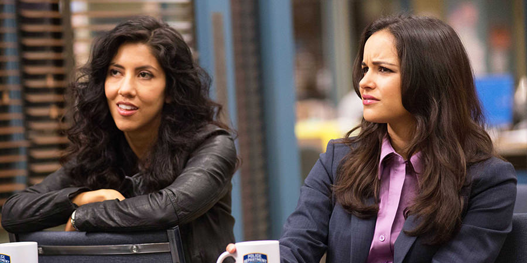
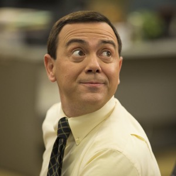

Brooklyn Nine-Nine também encontra prestígio por desmantelar estereótipos típicos da TV. Amy e Rosa, por exemplo, em momento algum representam o estereótipo de Mulher Latina Sexy ou Mulher Latina Cabeça-Quente. As três personagens femininas de B99 também não poderiam ser mais diferentes entre si. Gina Linetti é a assistente/secretária do comandante, viciada em redes sociais e aparentemente não liga pra nada. Sendo uma das personagens mais divertidas da série, Gina também não é nada disso: tem bom coração, é extremamente confiante em si mesma, conhece bem todos os membros da delegacia, é um membro que contribui de forma ativa para o bom funcionamento do seu local de trabalho, além de ser extremamente organizada com suas próprias finanças. Amy, Rosa e Gina são totalmente diferentes entre si, e com exceção dos comentários engraçadinhos que Gina dirige a Amy, mas também a todo mundo, nenhuma das personagens é colocada uma contra a outra.
 O estereótipo da “rivalidade feminina”, seja ao brigar por um cara, por uma posição social, pelo direito de ser a mais notada ou por não suportar as diferenças da colega, ainda mais em um ambiente de trabalho tipicamente masculino, aqui não se sustenta. No único episódio em que Amy começou a sentir ciúmes de Rosa e a relação entre as duas começou a se tensionar por uma discussão que não era válida, os roteiristas mostraram que, felizmente, a sitcom não veio ao mundo para usar mão de uma escrita preguiçosa e pouco original. “We work at a police force full of dudes, we got to have each other’s backs, okay?” [“Nós trabalhamos em um delegacia cheia de cara, nós precisamos cuidar uma da outra, ok?”, em tradução livre], é um das frases ditas pela detetive Diaz, resumindo muito bem o posicionamento da série sobre o tema. Gina também faz parte desta equação e, mesmo que ela e Amy sejam como água e vinho e tenham seus atritos, o roteiro nunca precisou colocá-las uma contra a outra para tornar os episódios interessantes ou prender a audiência. Brooklyn Nine-Nine constrói mulheres com interesses reais e próprios, sem sexualizá-las, e coloca em voga conflitos pessoais e profissionais que trazem tridimensionalidade às personagens, fazendo-as existir por si e não em função de um homem, provando que não basta tornar a representatividade feminina e étnica apenas um número nas produções, mas que o trabalho precisa ser bem feito e desenvolvido para que seja válido.
 Charles Boyle, hétero, branco, com interesses tradicionalmente não-masculinos, tem de tudo para fazer o papel de Nice Guy (cara legal”, em especial nas primeiras temporadas em que sente atração por Rosa). No entanto, quando percebe que exagera na dose, ele volta atrás e pede desculpas por fazer com que a sua amiga – sim!, homens e mulheres são realmente amigos em Brooklyn Nine-Nine – se sinta desconfortável. Num geral, a série é muito competente em entregar personagens masculinos que externalizam seus sentimentos de forma verbal, inclusive entre si – Charles e Jake realmente discutem aspectos de sua própria amizade. Nesse viés, a frase “Terry loves yogurt” [“Terry ama iogurte”], faz ainda mais sentido. Afinal, com base nos estereótipos reforçados na TV, é de se estranhar que uma declaração de amor tão delicada venha de um homem, super musculoso e negro. A figura de poder, força, liderança e provedor da família é padronizada como a do sexo masculino, e por esse motivo ter uma personalidade com atitudes e características que fogem a esse estereótipo e se assemelham em qualquer nível com o conceito de feminilidade causa uma retaliação para a figura masculina. No fim do dia a masculinidade tóxica ainda é um traço do machismo. O personagem de Terry Crews em momento algum cai na figura do angry black man [homem negro raivoso], muito pelo contrário. Preocupado com sua própria vida pois quer estar seguro para poder criar suas duas filhas pequenas, Terry Jeffords gosta de filmes estrangeiros, arte impressionista, dorme ao som do canto das baleias, é pai presente, dedicado e preocupado, e chora sem pudor.
O capitão Holt – um personagem espetacular, vamos admitir – também quebra, mais uma vez, uma série de clichês. Autoridade unânime na delegacia, Holt é abertamente gay, mas está longe de ser comercial ou possuir características que remetam à feminilidade – ainda que existissem, vale frisar, não fariam dele inferior. É de se pensar que tal opção dos roteiristas reforça a ideia de “gays-dentro-do-armário”, que não estão livres para serem quem são. Não é o caso de Holt, no entanto, pois este sempre manteve a mesma postura, como podemos observar pelos flashbacks da série, e é quase replicada por seu marido Kevin Cozner (Marc Evan Jackson). Extremamente sério, direto e competente, não é com meias palavras que Holt admita que ter sido um homem negro e gay na academia de polícia nos anos 80 tenha sido uma tarefa difícil. Apesar disso, em momento algum o fato de Holt ser gay se torna a principal característica dele. No primeiro episódio da série, Holt não dedica mais do que cinco segundos ao fato de ser gay, antes de prosseguir para outros tópicos. Como o próprio ator Andre Braugher explica, “eu não estou fazendo o papel do ‘capitão gay’, eu estou fazendo o papel de um capitão policial que também é gay. A distinção entre esses dois papéis é enorme“.
É inevitável louvar Brooklyn Nine-Nine pela maneira descontraída e real com que desenvolve seus personagens e a relação entre eles. Todos os personagens de B99 crescem, são falhos, aprendem com seus erros e não ocupam um único papel – nem na delegacia, nem em suas vidas pessoais. Não são, em momento algum, reduzidos a uma única característica, nem servem unicamente para um propósito. As relações interpessoais que os personagens têm entre si se baseiam, primeiramente, em respeito e honestidade. Não há uma competitividade nociva entre os colegas, mas seus hiper-competitivos episódios de Halloween são demais. A relação romântica entre Amy Santiago e Jake Peralta é, sem delongas, uma das mais saudáveis da TV atual. É bem pavimentada, cresce organicamente (ou seja, os fãs de slow-burn vão adorar) e quando finalmente estão juntos como um casal, Amy e Jake apoiam um ao outro, querem ver o outro bem, e dialogam. Parece ridículo que algo tão simples e básico mereça reconhecimento, mas em um mar de relacionamentos abusivos e maus relacionamentos na TV, é como respirar ar fresco assistir um casal ser um pouco mais como os casais (heteroafetivos) deveriam ser.